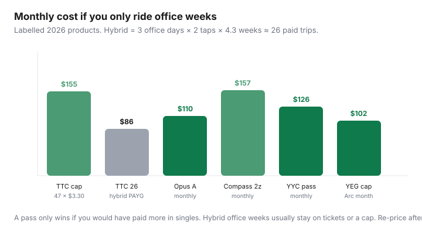

Transportation · Canada
How to build a simple transit pass break-even calculator for any Canadian city
People move from Calgary to Toronto, go hybrid in March, and keep buying last year’s pass because the app Autoloaded it. The arithmetic does not care about habit. Every Canadian fare table is the same sentence: rides × single fare versus the pass (or the cap). Toronto now caps. Vancouver and Montréal still sell monthlies. Edmonton caps on Arc. Calgary still sells a paper-and-app monthly. Build one spreadsheet and change the inputs when you change cities — or when the operator raises fares.
This is a transit pass break-even calculator for Canada’s cities, not a one-city tip. Use it with the city guides for TTC capping, Compass, Opus, and Calgary and Edmonton.
Key takeaways
- Universal formula: break-even trips = pass price ÷ eligible single fare. Buy the pass only if a typical month’s paid trips exceed that number (and you will keep that pattern).
- Fare-capping cities (Toronto TTC from 1 Sep 2026; Edmonton Arc) do the monthly math for you — if you tap the same payment method. Classic monthly cities (Compass, Opus, Calgary) still need a purchase decision.
- Hybrid WFH: count office weeks, not 30 calendar days. 3 days × 2 taps × 4.3 ≈ 26 trips, not 40.
- Concession, U-Pass, Fair Pass, and employer products change the fare in the denominator. Recalculate; do not reuse adult math.
- Re-run the sheet after every fare increase (TransLink 1 Jul 2026, ARTM 1 Jul 2026, Calgary Jan 2026, TTC Sep 2026 capping). Last year’s 38-trip rule may now be 42.
The universal formula: rides × single fare vs pass price
Write four cells:
- S = the single fare you actually pay (PRESTO $3.30, Compass stored value for your zones, Opus 1-trip or 10-trip unit price, Calgary ticket $4.00, Edmonton Arc $3.00).
- P = monthly pass or the monthly cap ceiling.
- T = paid trips you expect this calendar month (first tap in a transfer window, not every boarding).
- Cost = min(T × S, P) in a capping city; T × S vs P in a classic city (you choose P up front).
Break-even trips B = P ÷ S. If T is reliably above B, the pass (or hitting the cap) is cheaper. If T wobbles around B, stay on pay-as-you-go so light months do not donate money.
| City / product | S (single) | P (month) | B (trips) |
|---|---|---|---|
| TTC adult PRESTO (cap) | $3.30 | $155.10 cap / $143 12-Month | 47 cap / 43.3 vs 12-Month |
| Compass adult 1-zone | $2.85 stored | $117.20 | ≈41.1 |
| Compass adult 2-zone | $4.20 stored | $156.70 | ≈37.3 |
| Opus All Modes A ordinary | $3.75 (or $3.50 on 10-trip) | $110 | ≈29.3 / 31.4 |
| Calgary Transit adult | $4.00 ticket | $126 | 31.5 |
| Edmonton ETS Arc | $3.00 PAYG | $102 cap | 34 (automatic) |
Adjust for fare capping cities (Toronto) vs classic monthly cities
Capping (TTC from 1 Sep 2026; Edmonton Arc daily $10.50 / monthly $102): you never pre-buy P. Cost = min(T × S, P). The risk is using two cards and never reaching P. There is no refund problem because you did not prepay. Toronto still sells an Adult 12-Month at $143 — that is a classic contract sitting beside a cap. See the TTC cap vs 12-Month guide.
Classic monthly (Compass, Opus, Calgary My Fare): you choose P on the 20th or the 15th. If you then take a two-week trip, P is gone. Autoload is how hybrid people overpay. Stored value / tickets / 10-trip booklets are the default until two real months beat B.
GO Transit is a third species: distance fares plus a loyalty ladder, not a flat monthly vs $3.30. Do not drop GO into the TTC cap cell. Use the GO PRESTO guide.
Hybrid WFH: count only office weeks, not calendar days
The failure mode is “I commute, so I need a pass.” Hybrid 2- and 3-day weeks are a different product.
- Office days / week × 2 paid trips × 4.3 weeks = commute trips.
- Add weekend and evening trips that fall outside the transfer window.
- Subtract vacation weeks as zero commute trips (capping cities love this; classic monthlies hate it).
Examples: 2-day hybrid ≈ 17 commute trips. 3-day ≈ 26. 5-day ≈ 43. Overlay the table above. 26 trips beats TTC’s 47-cap (you never cap), loses to Opus $110 if you pay $3.75 singles ($97.50 — still under), loses to Calgary $126 ($104 on tickets), and never hits Edmonton’s $102 cap ($78). Five-day flips most of those.

Family and concession fares that change the math
Never reuse adult S:
- TTC: youth $2.35, senior $2.25, Fair Pass $2.10, post-secondary monthly $128.15. Children 12 and under free. Open-loop debit is always adult $3.30.
- Compass: concession stored $2.30 / $3.40 / $4.60; concession monthly $66.95 all zones; U-Pass BC $47.85 (Sep 2026 eligible students). Adult DayPass $12.55.
- Opus: reduced column (photo OPUS); 4-month $251; Gratuité 65+ Zone A for Montréal-agglomeration residents.
- Calgary: youth ticket $2.65 / monthly $92 from Sep 2026; low-income Fair Entry bands $6.30 / $44.10 / $63; senior annual $169.
- Edmonton: senior Arc monthly cap $36; low-income annual products; youth/senior rows on edmonton.ca/ets.
A family of four on Calgary’s weekend group pass ($18 in 2026) can beat four adult singles for one Saturday. That is a day product — it does not justify four adult monthlies.
Template spreadsheet you can reuse city to city
One tab, copy down for each city or each fare change:
| Field | Cell | Notes |
|---|---|---|
| City / agency | TTC, GO, Compass, Opus, Calgary, ETS… | |
| Fare date stamp | PDF or page reviewed date | |
| S single / T trips / P pass or cap | Concession? Same card all month? | |
| B = P ÷ S | Break-even paid trips | |
| Hybrid T (office × 2 × 4.3 + other) | Do not count transfers as trips | |
| Decision | PAYG / cap / monthly / 12-month contract |
Keep last month’s actual T. One real month beats a vibes month. If actual T is 20% under B, stop Autoloading.
When ride-hail + transit hybrid still beats a second pass
A second monthly (GO + TTC, Compass 3-zone, Opus ABC) is the expensive way to cover two rare suburban days. Price: stay on the cheap core product + two Uber/taxi/car-share trips. If those two trips cost less than (P_big − P_small), do not upgrade. Downtown TTC/Opus/Compass 1-zone plus a monthly car-share membership is the car-lite version of the same idea. A second agency pass is for a five-day off-island commute, not for IKEA.
Re-check after every fare increase
Operators publish once or twice a year. Put a calendar reminder on the effective date — not “when I notice the tap feels expensive.”
- TransLink average 5% on 1 Jul 2026 — Compass B moved; 2-zone monthly is $156.70.
- ARTM/STM 1 Jul 2026 — Opus All Modes A $110.
- Calgary Transit Jan 2026 — adult single $4.00, monthly $126.
- TTC capping 1 Sep 2026 — most monthlies died; 47 × $3.30 = $155.10.
- Edmonton Arc monthly adult cap $102 (confirm edmonton.ca the month you move).
When S rises and P rises by a different percentage, B moves. That is the whole hobby. Re-paste S and P. Do not inherit last year’s Autoload.
Sources & date stamps
- TTC Fares and passes, reviewed 20 Sep 2026 — $3.30 adult PRESTO, 47-trip cap, $143 Adult 12-Month, Fair Pass $2.10.
- TransLink Compass fares in effect 1 Jul 2026 — stored $2.85 / $4.20 / $5.40; monthlies $117.20 / $156.70 / $211.65 (as in the Compass guide).
- ARTM/STM 1 Jul 2026 — All Modes A $3.75 / $110. Calgary Transit 2026 — $4.00 / $126. Edmonton ETS Arc page — $3.00 PAYG, $102 monthly cap.
Frequently asked questions
What is the break-even formula for a Canadian transit pass?
Break-even trips = pass price ÷ the single fare you actually pay. Buy the pass only if a typical month’s paid trips exceed that number. In capping cities, you pay the lesser of trips × fare and the cap — if you use one payment method.
How do I count trips on a hybrid schedule?
Office days × two paid trips × 4.3 weeks, plus weekend trips outside the transfer window. A 3-day hybrid is about 26 commute trips, not 40. Do not count free transfers as new trips.
Does Toronto still need this calculator after fare capping?
Yes, for the Adult 12-Month ($143) versus the $155.10 cap, and for hybrid months that never hit 47. Everyday PAYG capping is automatic. GO Transit is a separate ladder.
Can I use one spreadsheet when I move cities?
Yes. Change S, P, and the transfer rules. Compass zones, Opus multi-agency titles, and TTC caps are different products. Recalculate concession and U-Pass rows from scratch.
When should I re-check the numbers?
After every published fare increase, when you change office days, and when you qualify for a concession or Fair Pass. Autoload is not a decision.